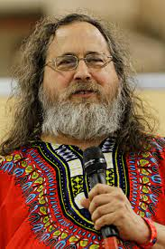
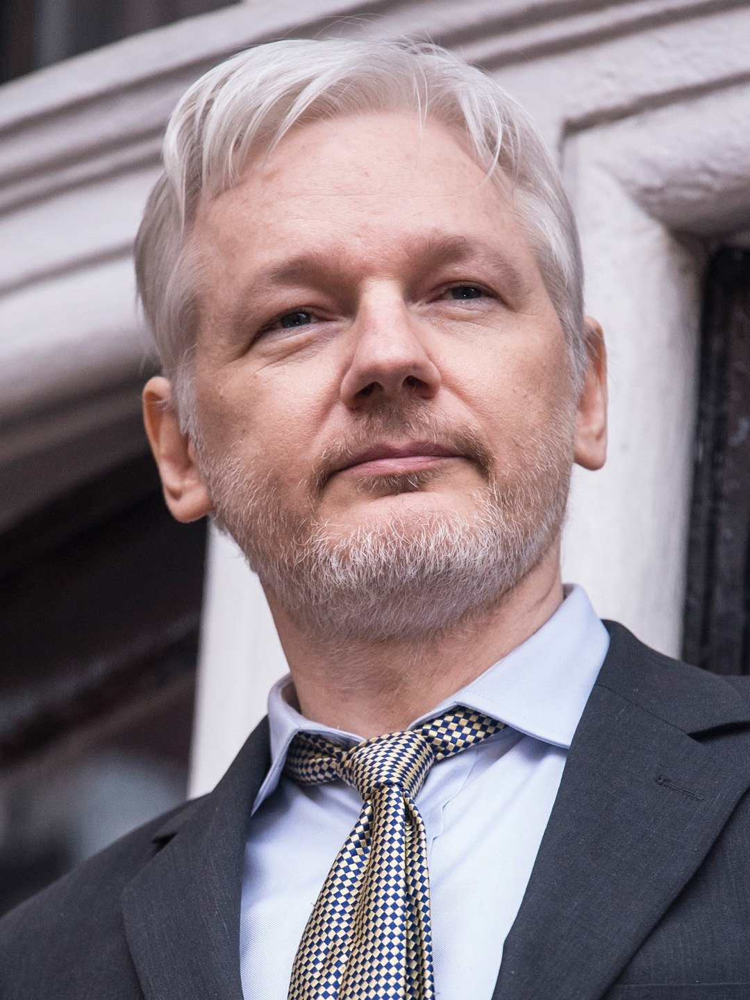

The Concept of free internet
Half the world’s population lives without a reliable
internet connection, which limits their access to
education, financial services, political engagement,
free expression, and more.
Free internet access must be considered as a
human right, as people unable to get online --
particularly in developing countries -- lack
meaningful ways to influence the global players
shaping their everyday lives, according to a new
study.
New research reveals that the internet could be a
key way of protecting other basic human rights such
as life, liberty, and freedom from torture -- a means
of enabling billions of people to lead 'minimally
decent lives'.
Internet access is no luxury, but instead a moral
human right and everyone should have unmonitored
and uncensored access to this global medium --
provided free of charge for those unable to afford it
Richard Stallman
Born March 16, 1953 New York, US is known for- Free software movement, GNU, GNU Emacs,
GNU Compiler Collection, GNU General Public License,
copyleft, Free Software Foundation etc. He has many Awards under his belt like:-
MacArthur Fellowship
ACM Grace Murray Hopper Award
EFF Pioneer Award
ACM Software System Award
Internet Hall of Fame
He hosts a website called stallman.org
Richard Matthew Stallman is both an acclaimed software freedom activist
and software developer. In the 1980s, he founded the
GNU Project to create a free unix-like operating system,
and has been the project's lead architect and organizer.
Also in the 1980s, he founded the free software
movement, and the Free Software Foundation. He cofounded the League for Programming Freedom. Stallman
pioneered the concept of copyleft and is the main author
of several copyleft licenses including the GNU General
Public License, the most widely used free software
license.
Since the mid-1990s, Stallman has spent most of his time
as a political campaigner advocating for free software, as
well as campaigning against both patenting software and
expansions of copyright law. Stallman's renowned
software accomplishments include developing the
original Emacs, GNU Emacs, the GNU Compiler
Collection, and the GNU Debugger.

Julian Assange
He set up Wikileaks, which publishes confidential
documents and images, in 2006, making headlines
around the world in April 2010 when it released footage
showing US soldiers shooting dead 18 civilians from a
helicopter in Iraq.

Hacking
Assange has been generally reluctant to talk about his
background, but media interest since the emergence of
Wikileaks has thrown up some insight into his influences.
He was born in Townsville in the Australian state of
Queensland in 1971, and led a rootless childhood while
his parents ran a touring theatre. He became a father at
18 and custody battles soon followed.
The development of the internet gave him a chance to
use his early promise at maths, though this too led to
difficulties.
In 1995 Assange was accused, with a friend, of dozens of
hacking activities. Though the group of hackers was
skilled enough to track detectives tracking them, Assange
was eventually caught and pleaded guilty.
He was fined several thousand Australian dollars - only
escaping a prison term on the condition that he did not
reoffend.
Wikileaks
He began Wikileaks in 2006 with a group of like-minded
people from across the web, creating a web-based
"dead-letterbox" for would-be leakers.
"[To] keep our sources safe, we have had to spread
assets, encrypt everything, and move
telecommunications and people around the world to
activate protective laws in different national
jurisdictions," Assange told the BBC in 2011.
"We've become good at it, and never lost a case, or a
source, but we can't expect everyone to go through the
extraordinary efforts that we do."
He adopted a nomadic lifestyle, running Wikileaks from
temporary, shifting locations.
He could go for long stretches without eating and focus
on work with very little sleep, according to Raffi
Khatchadourian, a reporter for the New Yorker magazine
who spent several weeks travelling with him.
"He creates this atmosphere around him where the
people who are close to him want to care for him, to help
keep him going. I would say that probably has something
to do with his charisma."
Edward Snowden
Edward Snowden, a former contractor for the CIA, left
the US in late May after leaking to the media details of
extensive internet and phone surveillance by American
intelligence. Mr Snowden, who has been granted
temporary asylum in Russia, faces espionage charges
over his actions.
As the scandal widens, BBC News looks at the leaks that
brought US spying activities to light.
Developments on privacy and protecting
the end user
Privacy and data protection are pivotal issues in
nowadays society. They concern the right to prevent the
dissemination of sensitive or confidential information of
individuals. Many studies have been proposed on this
topic from various perspectives, namely sociological,
economic, legal, and technological. We have recognized
the legal perspective as being the basis of all other
perspectives. Actually, data protection regulations set
the legal principles and requirements that must be met
by organizations when processing personal data. The
objective of this work is to provide a reference base for
the development of methodologies tailored to design
privacy-aware systems to be compliant with data
protection regulations.
Data Privacy or Information privacy is a part of the data
protection area that deals with the proper handling of
data focusing on compliance with data protection
regulations.
Data Privacy is centred around how data should be
collected, stored, managed, and shared with any third
parties, as well as compliance with the applicable privacy
laws (such as California Consumer Privacy Act- CCPA or
General Data Protection Regulation GDPR).
Along with Data Security, Data Privacy creates a Data
Protection area with protected usable data as an output.
However, Data Privacy is not just about the proper
handling of data but also about the public expectation of
privacy, centring around the individual as a key figure.
Elements of Data Privacy
Data Privacy or Information privacy encompasses 3
elements:
Right of an individual to be left alone and have control
over their personal data
Procedures for proper handling, processing, collecting,
and sharing of personal data
Compliance with data protection laws
Data protection laws around the world aim to give back
individuals control over the data, empowering them to
know how their data is being used, by whom and why,
giving them control over how their personal data is being
processed and used.
Right to internet as a fundamental right
under article 21 of Indian Constitution
The right to be able to access the internet has been read
into the fundamental right to life and liberty, as well as
privacy under Article 21 of indian constitution. The court
added that it constitutes an essential part of the
infrastructure of freedom of speech and expression.
potential Fundamental Right to Internet could have a
positive as well as a negative character. The positive
character would put an affirmative obligation on the
government to implement schemes and policies to
ensure every individual has an internet connection and is
not excluded from the digital sphere. The negative
character would ensure that the government does not
interfere with one’s right to access the internet and does
not restrict it arbitrarily.
While grounds such as “national security”, “law and
order”, and “public order” can still be introduced as
restrictions on the potential Right to Internet, the
scrutiny and analysis of the situation would be high, and
the courts will eventually develop their own principles
and doctrines to remove the arbitrariness in restriction of
internet access. Since the right will not be treated as
ancillary to other rights, the principles evolved would
also be strictly contextualised and centred on use and
restriction of internet services.
Linux source code
The Linux kernel is a free and open-source, monolithic, modular, multitasking, Unix-like operating system kernel. It was conceived and created in 1991 by Linus Torvalds for his i386-based PC, and it was soon adopted as the kernel for the GNU operating system, which was created as a free replacement for UNIX. Since then, it has spawned a large number of operating system distributions, commonly also called Linux.
Linux is deployed on a wide variety of computing systems, such as embedded devices, mobile devices (including its use in the Android operating system), personal computers, servers, mainframes, and supercomputers. It can be tailored for specific architectures and for several usage scenarios using a family of simple commands (that is, without the need of manually editing its source code before compilation); privileged users can also fine-tune kernel parameters at runtime. Most of the Linux kernel code is written using the GNU extensions of GCC to the standard C programming language and with the use of architecture specific instructions (ISA). This produces a highly optimized executable (vmlinux) with respect to utilization of memory space and task execution times.
Ubuntu
Ubuntu is built on Debian's architecture and infrastructure, and comprises Linux server, desktop and discontinued phone and tablet operating system versions.[28] Ubuntu releases updated versions predictably every six months,[29] and each release receives free support for nine months (eighteen months prior to 13.04)[30] with security fixes, high-impact bug fixes and conservative, substantially beneficial low-risk bug fixes.[31] The first release was in October 2004.
Current long-term support (LTS) releases are supported for five years, and are released every two years. Since the release of Ubuntu 6.06, every fourth release receives long-term support.[29] Long-term support includes updates for new hardware, security patches and updates to the 'Ubuntu stack' (cloud computing infrastructure).[32] The first LTS releases were supported for three years on the desktop and five years on the server; since Ubuntu 12.04 LTS, desktop support for LTS releases was increased to five years as well.[33][34][35] LTS releases get regular point releases with support for new hardware and integration of all the updates published in that series to date.[36]
Ubuntu packages are based on packages from Debian's unstable branch, which are synchronised every six months. Both distributions use Debian's deb package format and package management tools (e.g. APT and Ubuntu Software). Debian and Ubuntu packages are not necessarily binary compatible with each other, however, so packages may need to be rebuilt from source to be used in Ubuntu.[37] Many Ubuntu developers are also maintainers of key packages within Debian. Ubuntu cooperates with Debian by pushing changes back to Debian,[38] although there has been criticism that this does not happen often enough. Ian Murdock, the founder of Debian, had expressed concern about Ubuntu packages potentially diverging too far from Debian to remain compatible.[39] Before release, packages are imported from Debian unstable continuously and merged with Ubuntu-specific modifications. One month before release, imports are frozen, and packagers then work to ensure that the frozen features interoperate well together.
Ubuntu is currently funded by Canonical Ltd. On 8 July 2005, Mark Shuttleworth and Canonical announced the creation of the Ubuntu Foundation and provided initial funding of US$10 million. The purpose of the foundation is to ensure the support and development for all future versions of Ubuntu. Mark Shuttleworth describes the foundation goal as to ensure the continuity of the Ubuntu project.[40]
On 12 March 2009, Ubuntu announced developer support for third-party cloud management platforms, such as those used at Amazon EC2.[41]
32-bit i386 processors were supported up to Ubuntu 18.04. It was decided to support "legacy software", i.e. select 32-bit i386 packages for Ubuntu 19.10 and 20.04 LTS.[42]